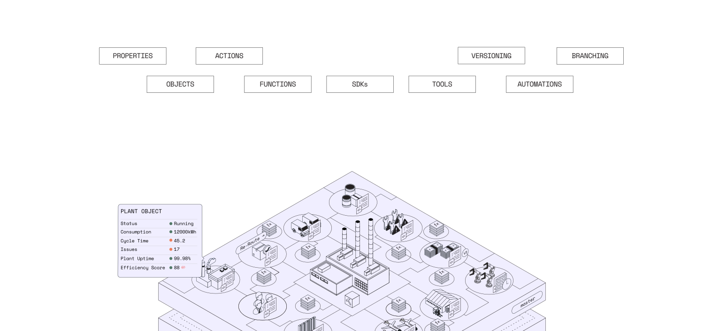
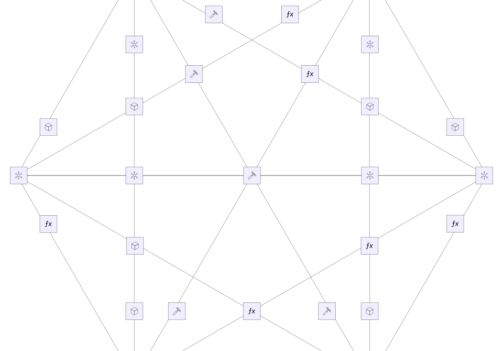

本体论
在人机协作（Human+AI）团队中统筹决策的核心系统
本体论系统 将企业的数据、逻辑、操作和安全编入其中，在整个运营过程中实现决策自动化。
OVERVIEW
驱动 自主运营。
本体论语言
对以下要素进行建模：
人机协作（Human+AI）决策。

本体论引擎
统筹复杂运营
，实现企业级规模。
本体论工具链
赋能开发者和智能体，将
该 本体论作为后端。
构建丰富的 AI 驱动型应用与服务。
Ontology SDK（OSDK）提供强大的开发者工具链，并辅以丰富的 DevOps 能力，使开发团队能够交付各类运营用例——从野火响应、海军后勤到汽车装配，不胜枚举。
了解更多为任何人员或任何智能体创建工具。
本体论是一个“工具工厂”，让您的构建者能够为人员和智能体定义工具。所创建的工具可用于查询任何数据类型、调用任何模型或逻辑，或执行任何操作——全部由严格而全面的安全框架进行治理。
了解更多通过 Ontology MCP 为外部智能体赋能。
Ontology MCP 将您的本体论原语以 MCP 工具的形式暴露给外部智能体。外部智能体和系统可以读取对象、查询数据并执行预定义操作。治理 Palantir 原生智能体的安全控制同样适用于外部智能体，随着您的智能体生态不断扩展，实现对本体论的可信交互。
了解更多将专业知识转化为共享基础设施。
企业各部门的团队——无论是运营人员、数据科学家、分析师还是数据工程师——都可以构建可复用的工具，将其领域专业知识直接编入本体论。这些工具驱动相互关联的工作流和自动化，在确保各用例一致性的同时加速开发。
了解更多